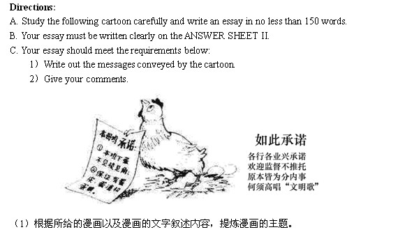

time: 00:12:55
状语在句子中的应用
appoint sb to somewhere 委任某人 接任某个职位/管辖某个机构
content sb with sth 用什么东西来满足sb
1.Seeking a competitive advantage, the companies are now considering to adopt unconditional guarantees to cater the customers' needs.(真题)
谓语动词:
Seeking ing形式, 不是谓语
are 助动词, + 后方ing形式, 形成孕妇法则
are considering
主语: the companies
宾语: to adopt
主谓宾
Seeking a competitive advantage: 前方没名词, 所以不是定语. 这个是状语, 修饰: .v, .adj, .adv
to cater the customers' needs: 前方是 guarantees 名词, 这是后置定语
Seeking /si:kɪŋ/ v. 寻找；谋求（seek的ing形式）
competitive /kəmˈpetətɪv/ adj. 竞争的；比赛的；求胜心切的
advantage /ədˈvɑːntɪdʒ/ n. 优势；利益；有利条件 vi. 获利 vt. 有利于；使处于优势
considering /kənˈsɪdərɪŋ/ prep. 考虑到；就...而论 conj. 考虑到 v. 考虑到（consider的ing形式）
adopt /əˈdɒpt/ vt. 采取；接受；收养；正式通过 vi. 采取；过继
unconditional /ˌʌnkənˈdɪʃənl/ adj. 无条件的；绝对的；无限制的
guarantees /ˌɡærənˈtiːz/ v. 保证（guarantee的第三人称单数） n. 保证，[法] 担保；抵押物（guarantee的复数）
cater /ˈkeɪtə(r)/ vt. 投合，迎合；满足需要；提供饮食及服务
=> 寻求竞争优势, 公司考虑去采取 迎合客户的需求的(后置定语修饰名词guarantees) 无条件担保.
=> 因为寻求竞争优势, 公司正在考虑采取 (去迎合顾客需求的) 无理由担保.
2.Working with the American Statistical Association, the journal has appointed seven experts to a statistics board of reviewing editors. (2015真题)
谓语动词: has appointed
appoint sb to somewhere 委任某人 接任某个职位/管辖某个机构, 所以这个to是补语
主语: the journal
宾语: seven experts
补语: to ...
状语 + 主谓宾补
Working with 处理, 一起工作, 与...合作
Statistical /stəˈtɪstɪkl/ adj.统计的, 统计学的
Association /əˌsəʊsiˈeɪʃn; əˌsəʊʃiˈeɪʃn/ n. 协会，联盟，社团；联合；联想
journal /ˈdʒɜːnl/ n. 日报，杂志,杂志社；日记；分类账
appoint /əˈpɔɪnt/ vt. 任命；指定；约定 vi. 任命；委派
expert /ˈekspɜːt/ n. 专家；行家；能手 adj. 熟练的；内行的；老练的 v. 当专家
statistic /stəˈtɪstɪk/ n. 统计资料；统计学；（一项）统计数据；统计量 adj. 统计的，统计学的
board /bɔːd/ n. 董事会；木板；甲板；膳食 vt. 上（飞机、车、船等）；用板盖上；给提供膳宿 vi. 寄宿
reviewing /rɪˈvjuːɪŋ/ n. 回顾；评估；修订 v. 回顾；复习（review的ing形式）；检验
editors /'editəz/ n. 编辑（editor的复数形式）；编辑器；剪辑师
review
=> (因为/为了) + 和美国统计联盟一起合作, 杂志社已经委派7个专家 接任/管理 审核 编辑 统计(董事)会.
3.By offering on-trend items at dirt-cheap prices, these brands have hijacked fashion cycles, shaking an industry long accustomed to a seasonal pace. (2013)
offering /ˈɒfərɪŋ/ n. 提供；祭品；奉献物；牲礼 v. 提供（offer的ing形式）
trend /trend/ n. 趋势，倾向；走向 vi. 趋向，伸向 vt. 使…趋向
items /'aɪtəmz/ n. 项目；条目；（电视、广播或报纸上的一条）新闻（item 的复数） v. <古>估算；逐条记载（item 的第三人称单数）
dirt /dɜːt/ n. 污垢，泥土；灰尘，尘土；下流话
cheap /tʃiːp/ adj. 便宜的；小气的；不值钱的 adv. 便宜地
dirt cheap 特别便宜，相当便宜
brand /brænd/ n. 品牌，商标；烙铁 v. 败坏（某人）名声；给（牲畜）打烙印；谴责；加商标于；促销；铭记；给（产品）设计品牌
hijack /ˈhaɪdʒæk/ vt. 抢劫；揩油 vi. 拦路抢劫 n. 劫持；威逼；敲诈
fashion /ˈfæʃn/ n. 时尚；时装；样式；方式；时髦人物 vt. 使用；改变；做成…的形状
cycle /ˈsaɪkl/ n. 循环；周期；自行车；整套；一段时间 vt. 使循环；使轮转 vi. 循环；骑自行车；轮转
shaking /ˈʃeɪkɪŋ/ n. 震动；震惊；挥动，摇动 v. 握手；摇动；颤动；使劲甩动；扰乱（shake 的现在分词）
industry /ˈɪndəstri/ n. 产业；工业；勤勉
accustomed /əˈkʌstəmd/ adj. 习惯的；通常的；独有的 v. 使习惯于（accustom的过去分词）
seasonal /ˈsiːzənl/ adj. 季节的；周期性的；依照季节的
pace /peɪs/ n. 一步；步速；步伐；速度 vi. 踱步；缓慢而行 vt. 踱步于；用步测
谓语动词: hijacked
主语:
=> 为了提供超级便宜价格项目的趋势, 这些品牌抢劫了时尚圈, 扰乱一个产业长期习惯的 to 一个季节的步伐.(正确性???)
=> 通过以极低的价格提供流行商品，这些品牌劫持了时尚周期，动摇了一个长期习惯于季节性节奏的行业。(有道)
time: 00:38:23
4.One, having seen the vastness of an ocean, will never content himself with a pool of water.
谓语动词: will never content, will+content构成孕妇法则
主谓宾补, content sb with sth 用什么东西来满足sb, with a pool water修饰himself
=> 一个人, 看见了大海的广阔, 永远不会满足于一池子的水.
=> 曾经沧海难为水.
One, having viewed the clouds over the Wu Mount, will call nothing else a cloud.
=> 除却巴山不是云.
time: 00:42:50
3.特殊“done”
| 语态 | 时态 |
having done | having是doing变形, 主动 | 过去/完成 |
being done | 被动 | 进行 |
to be done | 被动 | 将来(即将被完成) |
time: 00:47:09
感受的词全部是被动语态: 兴趣, 兴奋, 爽, 悲伤, 激动, 劳累, 满意
Being interested 被动 + 进行, 正在对...产生兴趣
Being interested in the relationship of language and thought, Whorf developed the idea that the structure of language determines the structure of habitual thought in a society. (2004)
谓语动词: developed
Being interested 被动 + 进行, 正在对...产生兴趣
=>
1.The young athlete is running towards the destination, ___with a smile on his face.
A.satisfied 被动, 无时态 √
B.satisfying 主动, 进行
C.to be satisfied 被动, 将来
D.having satisfied 主动, 过去/完成
分析: ___里的单词前方没有.n, 所以后半句是状语. 状语和主语一致,修饰主语.
athlete /ˈæθliːt/ n. 运动员，体育家；身强力壮的人
satisfied /ˈsætɪsfaɪd/ adj. 感到满意的 v. 使满意（satisfy的过去式）
运动员满意, 由于感受的词都是被动语态
2.___, your composition is full of mistakes.
A.Writing carelessly 主动
B.Written carelessly 被动, 完成 √
C.Having written carelessly having done, 主动, 过去/完成
D.Being written carelessly being done, 被动, 进行时
___, 前半部分是状语, 修饰主语作文, 作文被写, 所以是被动语态
carelessly /ˈkeələsli/ adv. 粗心地；不注意地；无忧无虑地, care + less + ly
composition /ˌkɒmpəˈzɪʃn/ n. 作文，作曲，作品；[材] 构成；合成物；成分
time: 01:07:05
6. 进阶篇：状语写作应用
本节重点：
非谓语玩转横二写作
have affection 喜欢某人, I have affection for you. 我喜欢你.
中文很多谓语的时候：
1.青铜: 并列句；
2.白银: 多个简单句；
3.黄金: 主干+状语（主语一致: doing..., to do..., done..., adj..., prep...）
4.钻石: 主干+独立主格 （主语不一致的时候, 独立主格[我爱你, with+sb你爱她]）
我爱你, 爱着你.
I love you, + 后方状语: 主干+状语（主语一致: doing..., to do..., done..., adj..., prep...）
=> 主动爱: loving you.
=> I love you, loving you. //太土了, 土上加土, 少年闰土...
=> I love you, breathing you.
=> I love you, having affection you. //affection /əˈfekʃn/ n. 喜爱，感情；影响；感染
我喜欢她, 她很美.
分析: 前后2句主语不一致
1.将主语变成一致: 她被我喜欢, 她很美.
=> She is loved by me, beautiful.
=> She is loved by me, very beautiful. //自己写的, 对否?
=> She is loved by me, impossibly beautiful. 她被我爱着, (她)难以置信地美. 后半句是状语, adj...
2.主语不一致, 独立主格[主语1, with sb ...]
=> I like her, (with) she beautiful. //she:第2句的主语
=> I like her, (with) she very beautiful.
=> I like her, (with) she impossibly beautiful.
time: 01:21:45

=> 一只母鸡仰望天空, 拿了张白纸, 内容显示着承诺.
=> A hen looks up into the sky, + 状语: doing..., to do..., done..., adj..., prep...
=> A hen looks up into the sky, holding/taking(主动拿) a piece of white paper, + (纸上)内容显示着承诺.(主语是纸, 主动显示)
=> A hen looks up into the sky, holding/taking a piece of white paper, (with) the content showing the promise.
time: 01:26:30
陪伴班范文背诵版:
see/look/regard ... as 将...视为
图片向我们传达的含义很明显：中国的国家文化已经渗透到许多国家，变得越来越国际化。那么，这张照片所反映的现象背后隐藏的原因是什么？首先，随着改革开放政策得以实施，中国文化逐渐吸引了全世界越来越多的人对中国有更深入的了解。此外，有些人，尤其是年轻人，将异国情调视为时髦的东西，将所有的精力和热情投入到体验来自其他文化的事物中。最后，兴起的信息技术是幕后的另一个推动力，这使得传播有关不同文化的信息更加容易。
写作, (定语), [状语]:
(图片向我们传达的)含义很明显：
=> The implication is very obvious //含义很明显 + 图片向我们传达的(被传达)↓
=> The implication conveyed by the picture to us is very obvious, //在名词后面加三姑六婆
(中国的国家)文化已经渗透到许多国家，[变得越来越国际化]。
penetrate /ˈpenətreɪt/ vt. 渗透；穿透；洞察 vi. 渗透；刺入；看透
increasingly /ɪnˈkriːsɪŋli/ adv. 越来越多地；渐增地
=> the culture has penetrated into many countries, //文化已经渗透到许多国家 + (中国的国家)↓
=> the Chinese national culture has penetrated into many countries, + [变得越来越国际化]。↓ //伴随状语
=> the Chinese national culture has penetrated into many countries, becoming increasingly globalization. //more and more可否??
那么，(这张照片所反映的现象背后隐藏的)原因是什么？
phenomenon /fəˈnɒmɪnən/ n. 现象；奇迹；杰出的人才
reflect 反应
=> Then, what are the reasons? 那么, 原因是什么? + (这张照片所反映的现象背后隐藏的)↓
=> Then, what are the invisible reasons behind the phenomenon reflected by this picture? //invisible是形容词, 三姑, 放前
独立主格↓(单独主语) 独立主格↓(单独主语)
首先，[随着改革开放政策得以实施]，中国文化逐渐吸引了(全世界越来越多的)人对中国有更深入的了解。
policy 政策
Reform and Open 改革开放
implement 实施
gradually /'grædʒʊəli/ adv. 逐步地；渐渐地
attract /ə'trækt/ vt. 吸引；引起 vi. 吸引；有吸引力
increasing /ɪnˈkriːsɪŋ/ adj. 越来越多的，渐增的 v. 增加，加大（increase的ing形式）
=> First of all, (with) the policy of Reform and Open implemented, Chinese culture gradually attracts increasing number of people to have deeper understanding of Chine。
此外，有些人，[尤其是年轻人]，将异国情调视为时髦的东西，[将所有的精力和热情投入到体验(来自其他文化的)事物中]。
see/look/regard ... as 将...视为
exotic /,iɡ'zɔtik/ adj. 异国的；外来的；异国情调的
foreign /'fɒrɪn/ adj. 外国的；外交的；异质的；不相关的
fashionable /'fæʃ(ə)nəb(ə)l/ adj. 流行的；时髦的；上流社会的
=> What's more, some people, especially young people, regard exotic/foreign things as something fashionable, + 后方谓语动词:投入
=> What's more, some people, especially young people, regard exotic/foreign things as something fashionable, putting all their energy and passion into things from other cultures. //experience体验呢???
最后，(兴起的)信息技术是(幕后的另一个)推动力，[这使得(传播有关不同文化的)信息更加容易]。
technology /tek'nɒlədʒɪ/ n. 技术；工艺；术语
=> Finally, raising/emerging infomation technology is another push behind the scene, + 后方谓语动词: 使得making
=> Finally, raising/emerging infomation technology is another push behind the scene, making information (regarding关于=about) spreading different cultures easier.